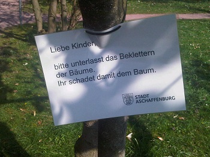
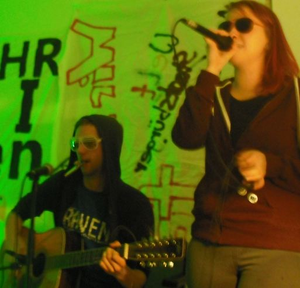

Anmerkung: Die Identitäte Bewegung spielt am Untermain bisher keine wirkliche Rolle. Das heißt nicht, dass diese sich als Jugendbewegung gebende rechtsextreme Gruppe nicht zumindest Kontakte nach hierher unterhält.
Aufkleber der Identitären Bewegung wurden in kleinen Seitengassen in Großheubach gesichtet. Es wird vermutet, dass die Person, die dieses Propagandamaterial verklebt hat, in jedem Fall vermeiden wollte, dabei gesehen zu werden (und daher öffentlichere Orte mied).
Damals hieß die JuI (Jugendinitiative Miltenberg) für einige Zeit mal UJuM (Unabhängige Jugend Miltenberg), da sich die Leute von der (vermutlich verwerflichen weil für politisch gehaltenen) Geschichte der JuI distanzieren wollten. Die Räume aber wurde weiterhin „JuI“ genannt, da konnten sie nix ändern. Konzerte konnten sie durchführen. Eines aus dem Jahr 1990 ist gut dokumentiert, hier der 1. Teil:
„Kriegsverbrechen: Warum Bürgstadt 1980 im Fokus stand“ titelt heute der Bote vom Untermain bzw. das Main-Echo. Dies ist insoweit völlig falsch, als Ernst Heinrichsohn, um den es heir geht und der damals Bürgermeister Bürgstadts und Rechtsanwalt in Miltenberg war, keine Kriegsverbrechen zur Last gelegt worden waren, sondern die Mitwirkung am Massenmord an den französischen Jüdinnen und Juden!
Diesmal sind wir schneller als der sprichwörtliche Schall! Auf der Suche nach Interessantem im Netz sind wir auf einen Clip gestoßen, den offenbar zuvor noch niemand angesehene hatte. Bitteschön!
Prima Sonntag, jene kostenlose Zeitung am bayerischen Untermain, die die BILD noch an Qualität zu unterbieten gedenkt, hat wieder einmal zugeschlagen. Nun entdeckte sie in der gestrigen Ausgabe völlig überrascht, dass es in Deutschland Kinderarmut gibt: (mehr…)
Es soll Zeiten gegeben haben, da war es normal, dass Kinder auf Bäume kletterten. Jetzt sieht der stille Betrachter oder die erstaunte Betrachterin diese Schilder massenweise im Schöntal-Park in Aschaffenburg:

Wir möchten die Warnung erweitern: Liebe Kinder, bitte nicht atmen, das sondert schädliches CO2 ab!
Michaela Voll, die neue Sozialarbeiterin des Miltenberger Jugendzentrums „ThirTeen“ war durchgehend beschäftigt beim Abschiedskonzert für ihren Vorgänger Simon Schuster. Die zahlreichen Gäste und die Auftretenden hielten die junge Sozialpädagogin auf Trab. Dennoch oder gerade deshalb: Michaela Voll ist sehr zufrieden mit ihrem ersten Konzertabend im „ThirTeen“; und Simon Schuster konnte für sich festhalten: Die zwei Jahre, in denen er das neue Jugendzentrum (JUZ) in Miltenberg aufbaute, haben bleibende Spuren hinterlassen und werden als grundlegend für die weitere Entwicklung des Treffpunktes gesehen, der vom Caritasverband geführt und durch die Stadt Miltenberg finanziert wird.

Bereits im ersten Teil des Abends ging Caritas-Mitarbeiter Martin Pechtold in einer Ansprache auf die Verdienste von Simon Schuster ein. Er bezeichnete es in seinen humorigen Ausführungen als „an ein Wunder grenzend“, dass „Miltenberg nach `nur´ ca. 38 Jahren Jugendhausbewegung dann doch noch einen Sozialarbeiter für die offene Jugendarbeit bekam“. (mehr…)
„Rechtsradikalismus und rechte Szene gibt es auch in unserer Region.“ So stand es in der Wochenendausgabe von Main-Echo/Bote vom Untermain. Beim Seminar „Methodenkoffer gegen Rechts“ am Donnerstag im Erlenbacher Jugendzentrum wurde demnach festgestellt: „So gibt es beispielsweise einen Supporter-Club für einen regionalen Fußballverein, die sich Trikots mit der aufgedruckten Zahl 88 anfertigen ließen, was zur Symbolik der rechten Szene zählt. Der achte Buchstabe im Alphabet ist das H, die 88 steht in rechten Kreisen für »Heil Hitler«. Ausländische Sportler werden mit Parolen beschimpft … Es ist zu beobachten, dass sich häufig auch in kleineren Ortschaften der Region Jugendliche zu fragwürdigen Gruppen mit rechter Gesinnung zusammenschließen. Es gilt, mit offenen Augen durch die Gegend zu laufen.“
Wir fanden zwei Zitate aus dem Main-Echo Obernburg vom vergangenen Wochenende höchst interessant – vor allem, wenn sie zusammen zitiert werden.
Im ersten wird der Bezirkstagskandidat der Piratenpartei erwähnt: „Der 31-jährige Elektroniker wohnt in Obernburg. So steht es in der Bekanntmachung des Wahlkreisleiters. Weitere Angaben zum Kandidaten liegen der Redaktion nicht vor. »Gerade in der Region Untermain haben wir mit Übergriffen durch Rechtsextremisten Probleme, weshalb von unseren Kandidaten die Kontaktdaten nicht öffentlich einsehbar sind«, schreibt der politische Geschäftsführer Maximilian Winkler zur Erklärung, warum der Wähler nicht mal im Internetauftritt der Netzpartei erfährt, wen er eigentlich wählt.“
Im zweiten Zitat wird ein recht dünnes Programm gegen Rechts der Miltenberger Kreisjugendpflege vorgestellt: „Besonders Jugendliche sind durch die rechtsradikale Szene gefährdet. »Der Landkreis ist zwar nicht direkt belastet«, sagt Kreisjugendpfleger Helmut Platz …“
Was die Piraten noch wissen, das entgeht einem Sozialpädagogen am Miltenberger Landratsamt selbstverständlich vollständig. Auch so kann man sich die Arbeit erleichtern.
Mitte September gibt es im Jugendzentrum Miltenberg eine Veranstaltung zur Geschichte der Jugendinitiative (JUI) und der späteren JUZ (Jugendinitiative für ein unabhängiges Zentrum).
Wir stellen hiermit die bei kommunal erschienenen Beiträge zusammen; sie sind sicherlich zur Vorbereitung bzw. Ergänzung gut geeignet:
--> Broschüre Chronik längst vergessener Ereignisse, JUI 1979 – 1990 (PDF)
--> Bis hierher und weiter (25 Jahre JUI)
--> Zum letzten Geleit (zum Vorläufigen Ende der JUI 2008)
--> Es geht voran (das erste Jahr nach Schließung des Jugendtreffs)
An Interessierte ergeht rechtzeitig Einladung, so die Veranstalter. Ehemalige JUI- oder JUZ-Mitglieder, die Interesse haben, aber nicht benachrichtigt werden, können sich auch an kommunal wenden (Kontaktformular), wir geben die Anfrage gerne weiter.
„Die Polizei ist entschlossen, eine für Samstagabend angekündigte Facebook-Party in der Mainaue von Wörth (Kreis Miltenberg) mit möglicherweise mehreren tausend Besuchern im Keim zu ersticken.“ So lesen wir es heute im Main-Echo. Und: (mehr…)
Nur einen lächerlich geringen Auszug aus der Pressemitteilung der Erziehungsberatung für den Kreis Miltenberg veröffentlichte das Main-Echo bzw. der Bote vom Untermain. Wichtige Passagen wurden ganz weggelassen, weshalb wir diese hier dokumentieren (die ganze Presseinfo befindet sich auf der Seite der Miltenberger Caritas): (mehr…)
Miltenberg – zu alt für die Jugend! Oder stimmt doch der an sich absolut überhebliche Slogan „jung und lebendig“, der anläßlich 775 Jahre Miltenberg ausgegeben wurde?
Manchmal ist die Kreisstadt wirklich lebendig. Und jung. Aber dann ist es den Stadtoberen auch nicht recht. In Erinnerung an die Aktion „Miltenberg geht baden! – Sonnen für ein autonomes Zentrum“:
Kommunal: Zahlreiche so genannte K-Gruppen, sie selber bezeichneten sich eher als marxistisch-leninistisch, also als ML-Organisationen, waren am bayerischen Untermain aktiv. Als letzte besteht heute noch die MLPD, die Nachfolgerin des Kommunistischen Arbeiterbundes Deutschlands, KABD. Mit dieser Organisation konntest Du längere Erfahrungen sammeln. Wie kam es dazu? Wie kamst Du zu dieser Gruppe? (mehr…)
Interview mit Johannes Büttner zu den Anfängen der linken und alternativen Bewegung am bayerischen Untermain
Kommunal: Johannes Büttner, heute Stadtrat der Kommunalen Initiative in Aschaffenburg, im Laufe der letzten Jahrzehnte bei einer sicherlich nicht mehr zählbaren Anzahl von Demonstrationen, Aktionen, Kundgebungen, Initiativen dabei gewesen, irgendwie überall, wo links oder radikal-demokratisch was los war – dieser Johannes Büttner war auch schon ganz am Anfang dabei, als es los ging mit der linken Bewegung am bayerischen Untermain. Und so haben wir ihn gebeten, uns ein Interview hierzu zu geben.
Ja, wie ging es denn eigentlich los? Was stand ganz am Anfang der linken Bewegung, der Achtundsechziger am Untermain? (mehr…)